Chapter 8. 메뉴 및 파일 입출력¶
CMW2026의 상단 메뉴바는 프로그램의 모든 핵심 기능을 제어하는 중추 신경계입니다. 이 장에서는 File, Export, Import 총 3개의 메뉴가 어떤 역할을 하는지 상세히 설명하고, 프로젝트 파일의 내부 구조와 시뮬레이터 연동 방법을 다룹니다.
8.1 메뉴바 전체 구성 개요¶
프로그램 최상단에 위치한 메뉴바는 프로젝트 관리부터 외부 데이터 연동까지 모든 기능을 제공합니다.
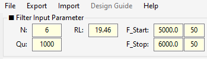
그림 8-1: CMW2026 메뉴바 전체 구성
8.2 File 메뉴 (프로젝트 관리)¶
File 메뉴는 현재 작업 중인 프로젝트의 생명주기를 관리합니다.
8.2.1 Save File (저장)¶
- 단축키:
Ctrl + S - 동작: 현재 작업 상태를 CSV 파일로 저장합니다. 이미 저장된 경로가 있다면 덮어쓰고, 처음 저장하는 경우 파일 탐색기가 열립니다.
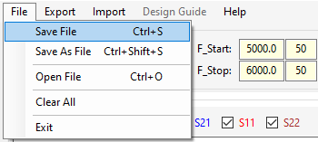
그림 8-2: Save File 저장 창
8.2.2 Save As File (다른 이름으로 저장)¶
- 단축키:
Ctrl + Shift + S - 동작: 현재 상태를 새로운 파일명으로 저장합니다. 기존 파일은 그대로 유지됩니다.
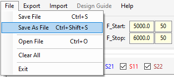
그림 8-3: Save As File 저장 창
8.2.3 Open File (열기)¶
- 단축키:
Ctrl + O - 동작: 저장된 프로젝트 CSV 파일을 불러옵니다. 불러오기가 완료되면 자동으로 Filter 모드로 전환되며 파형이 갱신됩니다.
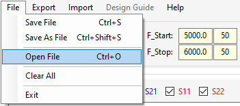
그림 8-4: Open File 파일 열기 창
8.2.4 Clear All (전체 초기화)¶
- 동작: 모든 매트릭스, Goals, 마커, TZ 데이터를 초기화하고 프로그램 실행 직후 상태로 되돌립니다.
- 주의: 실행 전 확인 대화상자가 표시되며, 이 작업은 되돌릴 수 없습니다.
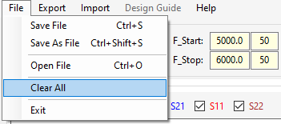
그림 8-5: Clear All 확인 대화상자
8.2.5 Exit (종료)¶
- 동작: 프로그램을 안전하게 종료합니다.
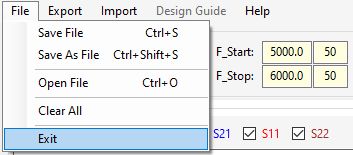
그림 8-6: Exit 버튼 클릭 (또는 창 닫기)
프로젝트 CSV 파일의 내부 구조
프로젝트 파일은 메모장으로 열어볼 수 있으며, 다음과 같이 섹션([ ]) 별로 구조화되어 있습니다.

그림 8-7: 프로젝트 CSV 파일 내부 구조
[Parameters]: 기본 파라미터 및 화면 설정[Target Matrix]: 커플링 매트릭스 값[Optimization Goals]: 최적화 목표 데이터[Synthesize TZ]: 전송 영점 주파수 목록[SParam Markers],[GD Markers]: 마커 데이터
8.3 Export 메뉴 (데이터 내보내기)¶
설계된 데이터를 외부 파일로 추출하여 보고서 작성이나 다른 시뮬레이터 연동에 사용합니다.
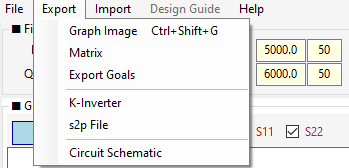
그림 8-8: Export 메뉴 드롭다운
8.3.1 Graph Image (그래프 이미지 저장)¶
- 단축키:
Ctrl + Shift + G - 동작: 현재 화면의 그래프와 마커 테이블 등을 하나의 이미지 파일(.png, .jpg, .bmp)로 저장합니다. 함께 저장되는
.txt파일에는 설계 파라미터 정보가 기록됩니다.
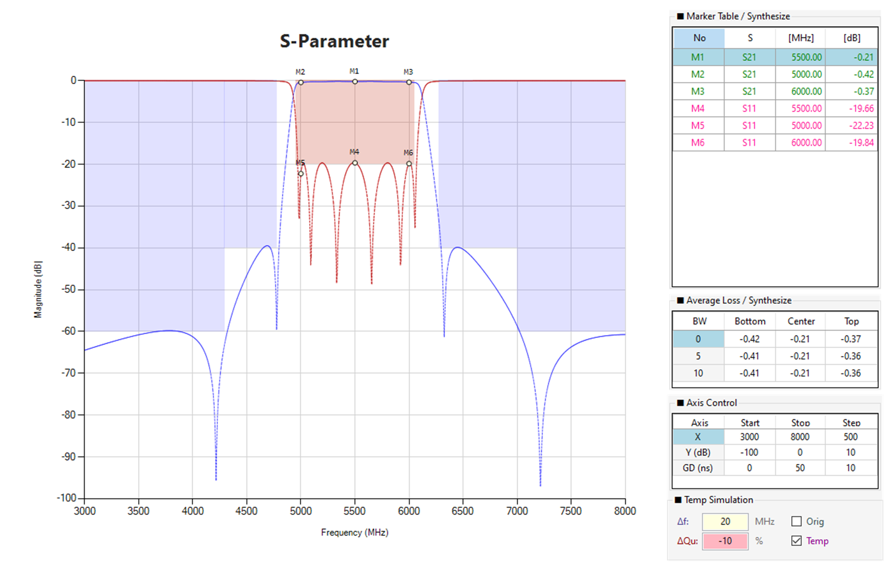
그림 8-9: Graph Image 저장 창
8.3.2 Matrix (매트릭스 CSV 내보내기)¶
- 동작: 커플링 매트릭스 데이터만 별도의 CSV 파일로 추출합니다. Lock 상태도 함께 저장됩니다.
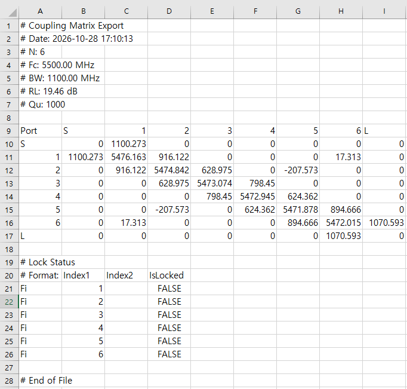
그림 8-10: Matrix CSV 저장 창
8.3.3 Export Goals (목표 마스크 내보내기)¶
- 동작: Optimization Goals 테이블의 데이터를 CSV 파일로 저장합니다. 다른 프로젝트에 목표 마스크를 이식할 때 유용합니다.
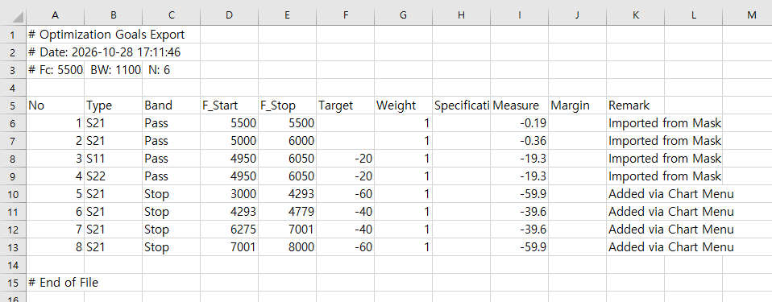
그림 8-11: Export Goals 저장 창
8.3.4 K-Inverter (K-인버터 변환)¶
- 동작: 커플링 매트릭스(CBW)를 회로 설계에 직접 사용할 수 있는 임피던스 인버터(K) 값으로 변환하여 CSV로 저장합니다.
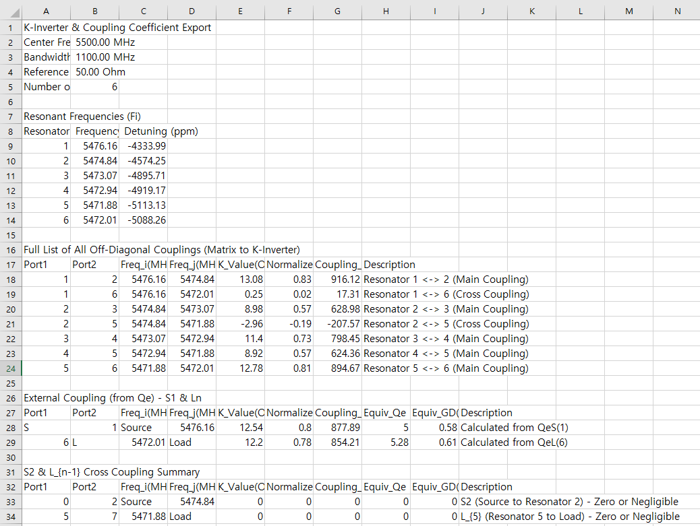
그림 8-12: K-Inverter CSV 저장 창
8.3.5 s2p File (S-파라미터 내보내기)¶
- 동작: 현재 매트릭스 또는 Synthesize 파형을 Touchstone(
.s2p) 포맷으로 저장합니다. CST, HFSS, ADS 등 상용 툴에서 바로 불러올 수 있습니다.
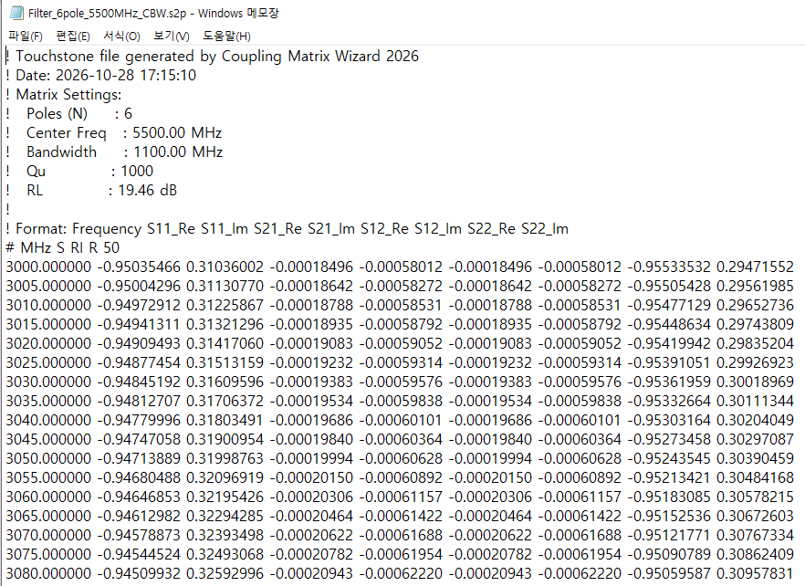
그림 8-13: s2p Export 창 (CBW/Synthesize 선택 및 파일 저장)
8.3.6 Circuit Schematic (회로 개략도)¶
- 동작: 매트릭스 기반의 필터 회로 토폴로지를 이미지 파일로 저장합니다.
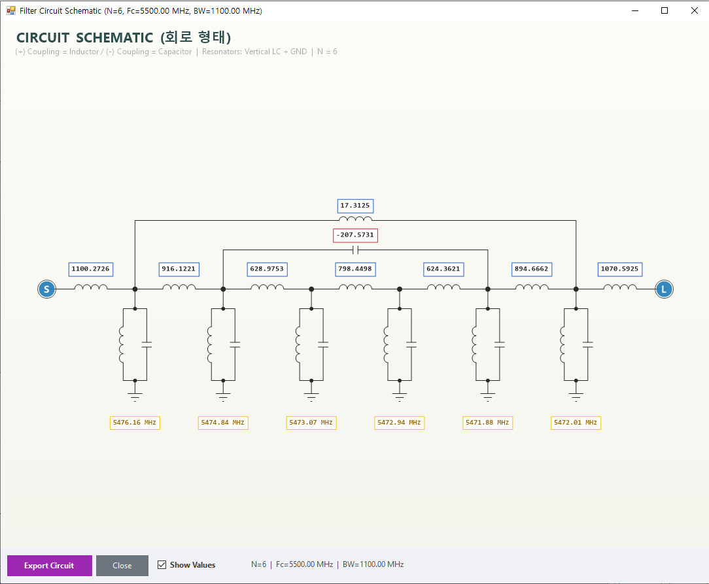
그림 8-14: Circuit Schematic 창
8.4 Import 메뉴 (데이터 불러오기)¶
외부에서 생성된 데이터를 CMW2026으로 가져옵니다.
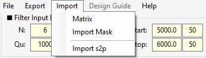
그림 8-15: Import 메뉴 드롭다운
8.4.1 Matrix (매트릭스 CSV 불러오기)¶
- 동작: Export → Matrix로 저장했던 매트릭스 CSV를 불러와 현재 프로젝트의 매트릭스만 교체합니다. (Goals, 마커 등은 유지됨)
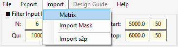
그림 8-16: Matrix CSV Import 파일 열기 창
8.4.2 Import Mask (목표 마스크 불러오기)¶
- 동작: 고객사에서 받은 스펙 마스크(CSV)를 불러와 Optimization Goals 테이블에 자동으로 채웁니다.
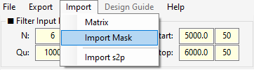
그림 8-17: Import Mask 파일 열기 창
8.4.3 Import s2p (외부 s2p 오버레이 비교)¶
- 동작: 외부 s2p 파일을 현재 그래프에 오버레이(점선) 로 표시하여 Compare 목적으로 사용합니다.
- 특징:
- Import 후 Compare 체크박스가 그래프 상단에 표시됩니다.
- Compare S11/S21/S22가 점선으로 오버레이됩니다.
- Compare 전용 마커(CM1, CM2, ...)를 그래프 우클릭 → Add MK → Compare S11/S21/S22로 추가할 수 있습니다.
- 기존 마커(M1, M2, ...)와 완전히 분리되어 관리됩니다.
- 해제: 그래프 우클릭 → Clear Compare Markers로 Compare 마커만 삭제할 수 있습니다. Compare 파형 자체는 다시 Import s2p를 실행하면 갱신됩니다.
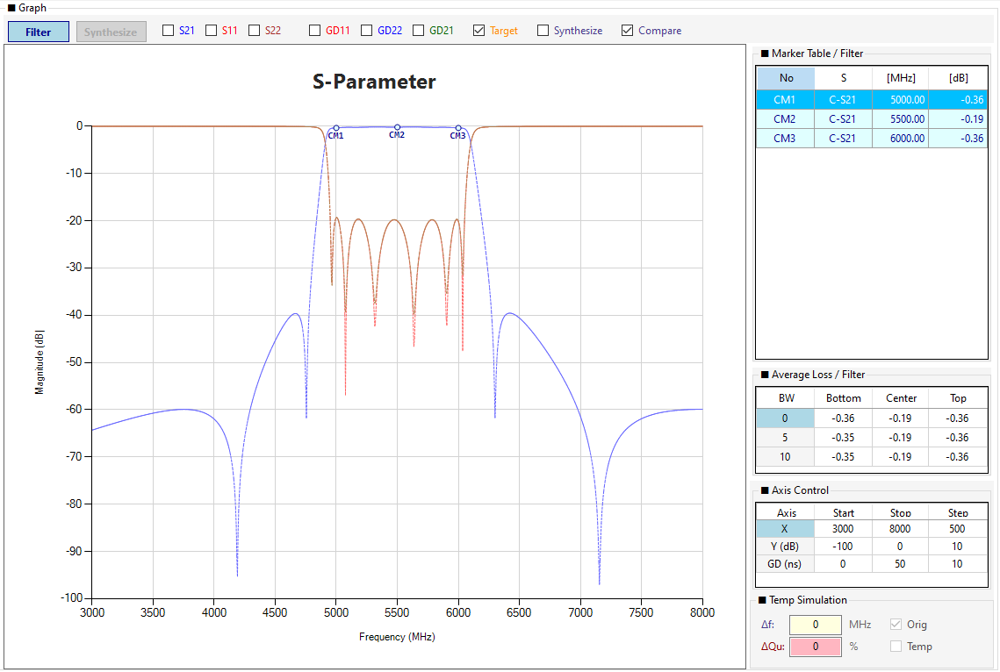
그림 8-18: Import s2p 오버레이 비교 화면